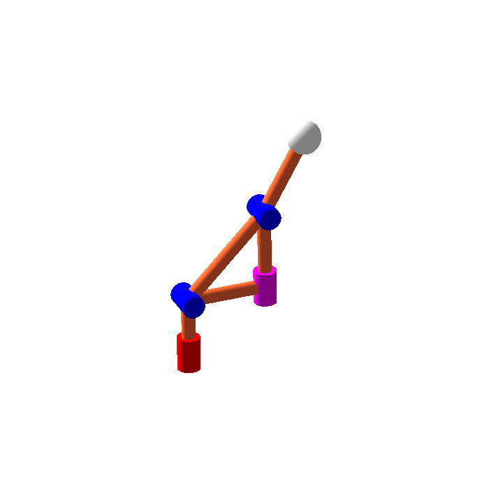

Kinematic intelligence
Can a skill travel from one robot to another?
Bring the robot’s own geometry and constraints into learning, so a demonstrated skill can adapt to different bodies.
See the evidence →Geometry · Learning · Robot design
I study how a robot’s geometry shapes what it can do—and how that understanding can guide motion planning, learning, and design.
Research directions
From the geometry of an individual mechanism to skills shared across different robots.
Kinematic intelligence
Bring the robot’s own geometry and constraints into learning, so a demonstrated skill can adapt to different bodies.
See the evidence →Geometry & motion planning
Understand inverse kinematic solutions, singularities, and cuspidality to reason about the whole motion.
Explore a research story →Mechanically intelligent design
Study how robot architecture and novel joints shape dexterity, compliance, and useful movement.
Explore the mechanisms →Inside the research

Featured research · RA-L 2025
Some robots can change inverse kinematic solutions without crossing a singularity. Our work classifies this behavior in special classes of redundant 7R robots and examines its implications for planning.
For students
If you are new to this work, begin with a visual question. The teaching material connects robot models to inverse kinematics, singularities, and motion planning.
Selected publications
A framework for transferring demonstrated skills across robots with different kinematic structures.
Why the starting configuration affects path feasibility and repeatability in commercial robots.
Work together
For research discussions, student interests, and industry enquiries, describe the robot, the problem, and what you would like to understand.
Contact details →About

I am preparing to join CNRS as a permanent researcher. My work connects kinematics, robot learning, and mechanism design.
Previously: doctoral research at LS2N, Nantes, followed by postdoctoral research at LASA, EPFL.
Academic CV · PDF ↗